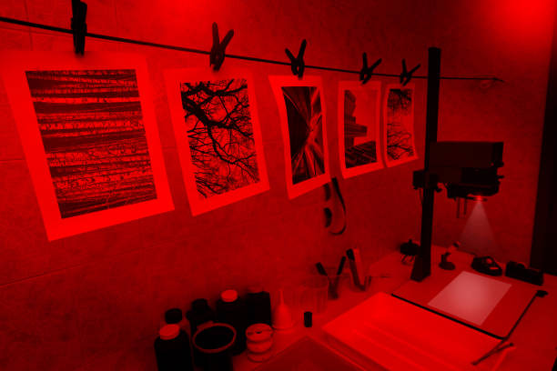
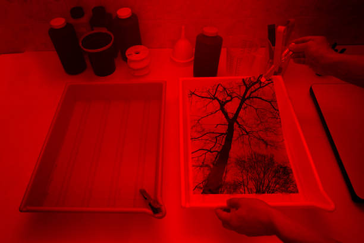
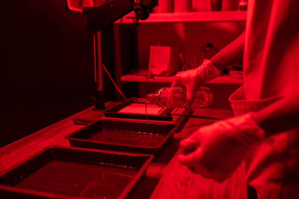
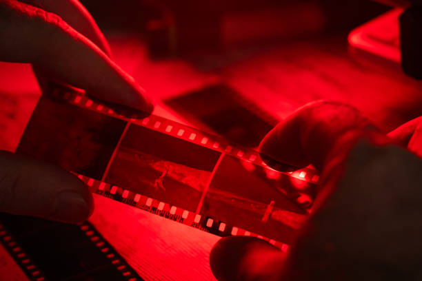

No quarto escuro, são utilizados diversos equipamentos, como tanques de revelação, ampliadores, bandejas de químicos e termômetros. Cada item desempenha um papel fundamental no processo de revelação das fotografias.
O processo de revelação no quarto escuro envolve etapas como revelação, interrupção, fixação e lavagem. Cada etapa é crucial para garantir que a fotografia final tenha a qualidade desejada.
